First placement pass: candidate areas, zero confirmed historical site pins. Compare the printed symbols, surrounding geography and separate provincial records. Search boxes are research windows, not mill boundaries or measured uncertainty. Every original inventory geometry remains null.
Road context corrected September 6: Highway 19 and the separate highway/bridge layers are now included. Earlier missing-road conclusions based on the incomplete road layer have been withdrawn.
Four mill annotations, three mine annotations, a school, forge, stables, church and bridge. Method and results · Full evidence data
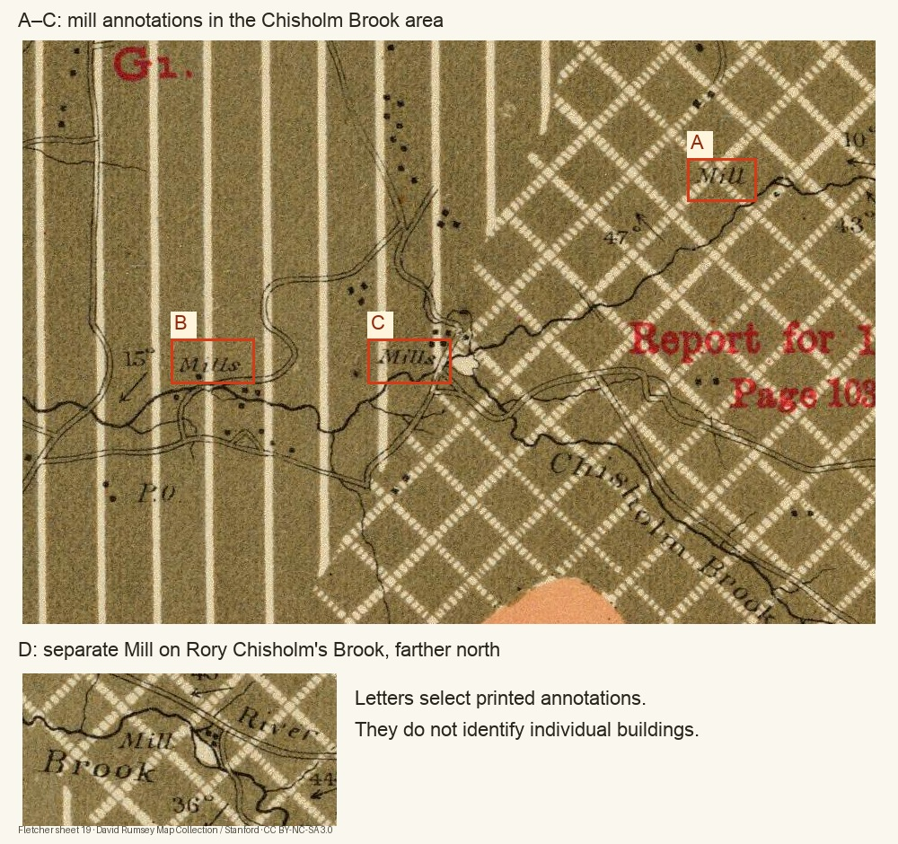
The school symbol lies south of a road junction, immediately east of a watercourse. The nearby western tributary junction and the downstream sequence of two eastern tributaries identify the corridor in the modern water network.
Unresolved: Highway 19 supplies the previously omitted north-south through-road context. The earlier statement that the through-road is now farther south was based on an incomplete road layer and is withdrawn. The northern draft is clipped; differences in the junction cannot alone prove realignment or locate the school.
Next evidence: Check a dated school record or historical aerial image for the building site within this corridor.
Original scan excerpt · Modern map centred on search area
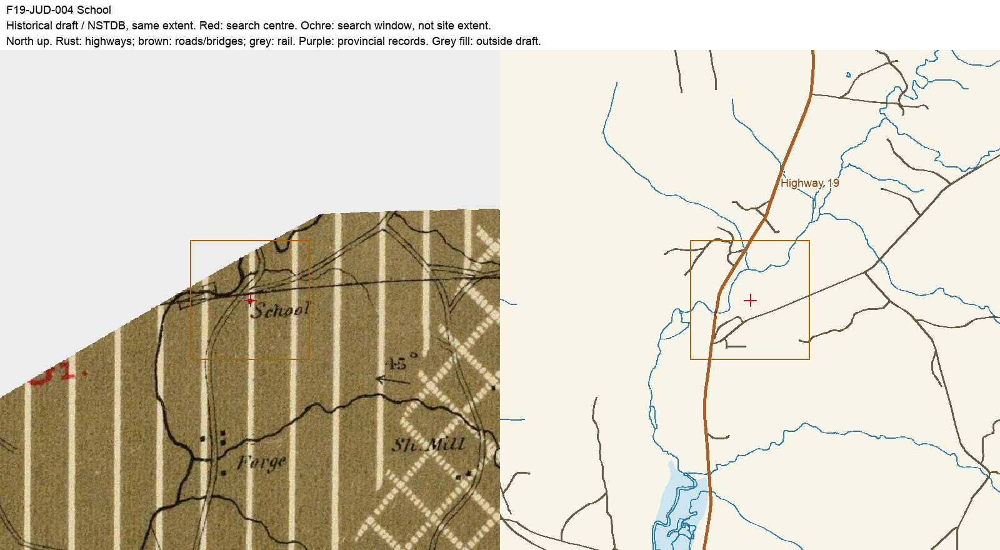
The single compact black building mark immediately above-left of School, below the road.
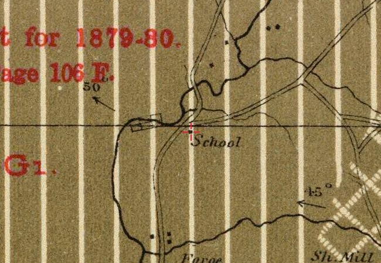
Original scan crop [3697, 1113, 650, 450]; displayed at 1:1, unrotated. Red crosshair: reviewed mark. Pink boxes: unresolved group.The forge mark lies east of the old road, between two eastern tributaries entering the north-south watercourse above the coastal inlet. That tributary order and inlet relationship remain recognizable in NSTDB. Highway 19 now appears along the corresponding north-south road corridor.
Unresolved: The earlier claim that the road segment was absent is withdrawn: the separate Highways layer was missing. Highway 19 is present in the corrected reference. Inlet detail differs; exact forge placement still needs site-specific evidence.
Next evidence: Seek an old aerial or forge-specific record; use the two tributaries to constrain the search.
Original scan excerpt · Modern map centred on search area
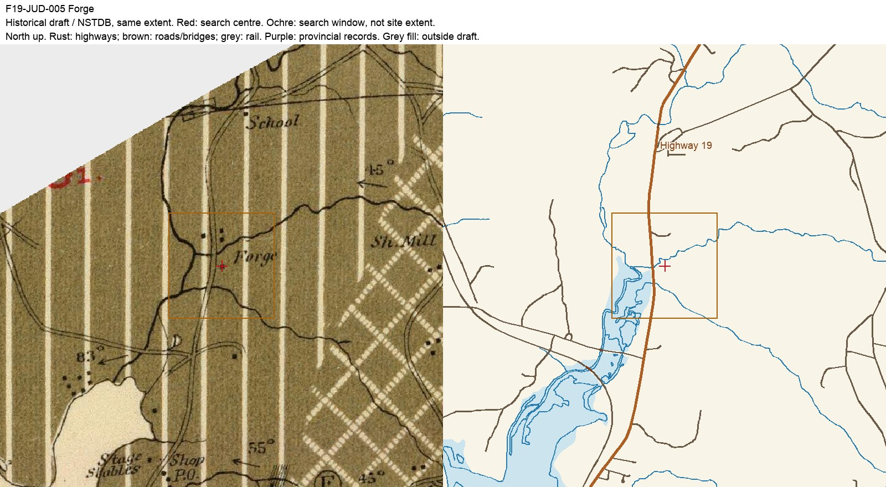
The isolated building mark directly left of Forge, south of the stream; other buildings lie north of that stream.
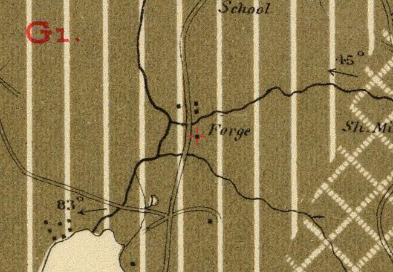
Original scan crop [3661, 1342, 650, 450]; displayed at 1:1, unrotated. Red crosshair: reviewed mark. Pink boxes: unresolved group.The stables mark lies on the east side of the elongated inlet, west of the coastal road and between two eastern tributaries. The inlet, southern tributary mouth and offshore island sequence corroborate the locality. Highway 19, now included and labelled, is the essential through-road reference along this shore.
Unresolved: The initial vector comparison omitted Highway 19. With the highway restored, the through-road corridor is recognizable; local curve and shoreline differences do not by themselves establish a change or identify a stable footprint.
Next evidence: Compare the road corridor with a dated aerial or stage-route record; keep Shop and P.O. associations separate.
Original scan excerpt · Modern map centred on search area
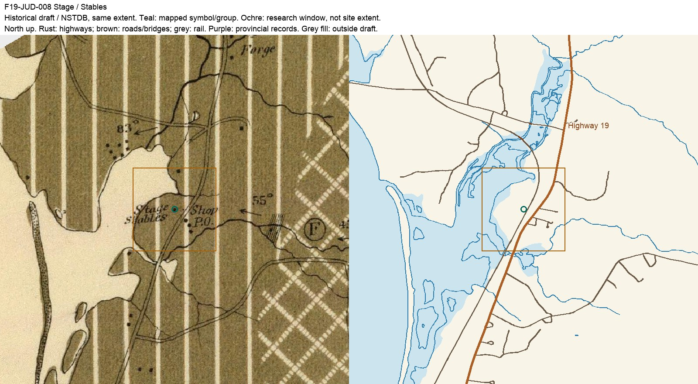
The isolated building mark immediately right of Stage Stables, west of the main road. This is a symbol association, not a footprint.
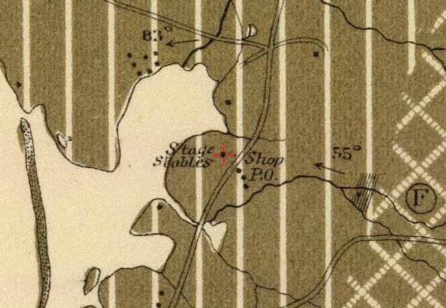
Original scan crop [3548, 1629, 650, 450]; displayed at 1:1, unrotated. Red crosshair: reviewed mark. Pink boxes: unresolved group.The church symbol lies south of a small coastal brook and north of Rory Chisholm's Brook. The two brooks, coastline and southern inlet constrain the district. The parish's own history provides a candidate institutional identity, St. Andrew's. Restored Highway 19 follows the same broad north-south corridor beside the church search area.
Unresolved: The previous claim that the modern through-road lies farther west is withdrawn: Highway 19 was omitted from the reference. The parish history reports two wooden churches before the present stone church but does not establish identical footprints.
Next evidence: Find a site plan, dated photograph or parish account explicitly locating the earlier church.
Original scan excerpt · Modern map centred on search area
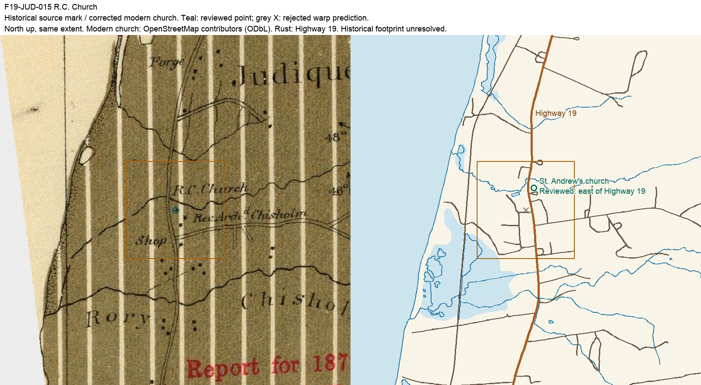
Distinct cross-like church symbol below the R.C. Church lettering beside the stream and coastal road.
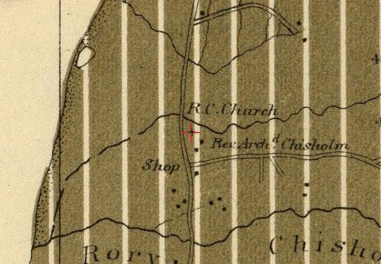
Original scan crop [3376, 2312, 650, 450]; displayed at 1:1, unrotated. Red crosshair: reviewed mark. Pink boxes: unresolved group.Historical source: Two wooden churches preceded the present sandstone church; page does not establish continuity of footprint.
The printed mill group lies by Rory Chisholm's Brook at the diagonal road crossing, with the large southward bend downstream and Graham River farther south. The modern brook's bend sequence and road approach corroborate this locality.
Unresolved: Multiple small marks prevent selecting one mill building. The modern road follows a different approach north of the brook. This is separate from the southern Chisholm Brook mill group.
Next evidence: Resolve the mill group using a plan, aerial or site-specific historical evidence before selecting an individual feature.
Original scan excerpt · Modern map centred on search area
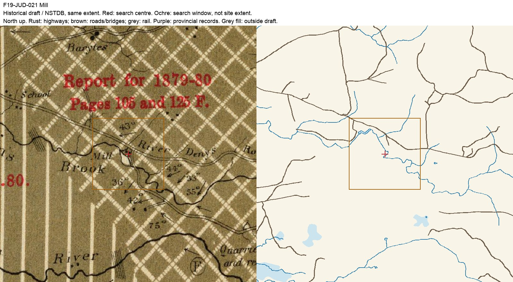
Multiple printed marks between the road and brook. The worker junction proposal is not an individual mill mark and is not adopted.
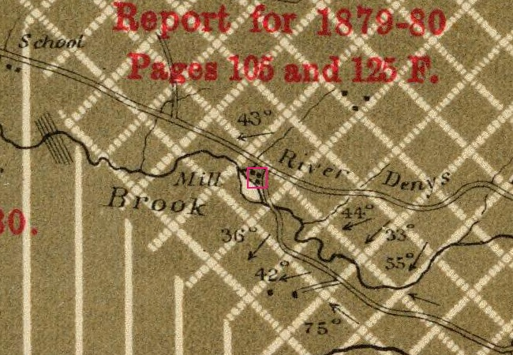
Original scan crop [4117, 2578, 650, 450]; displayed at 1:1, unrotated. Red crosshair: reviewed mark. Pink boxes: unresolved group.The label is near the southern end of a north-south lane beside the northeast-southwest stream corridor, northeast of the other two mill groups. The upstream bend, small northern tributary and western road approach distinguish the locality in NSTDB.
Unresolved: The label alone is not a building or dam point. This corridor is in the Chisholm Brook area; the pilot does not assign the main-channel name to every branch.
Next evidence: Resolve any printed facility mark, then check historical or local evidence for a mill or dam at this corridor.
Original scan excerpt · Modern map centred on search area
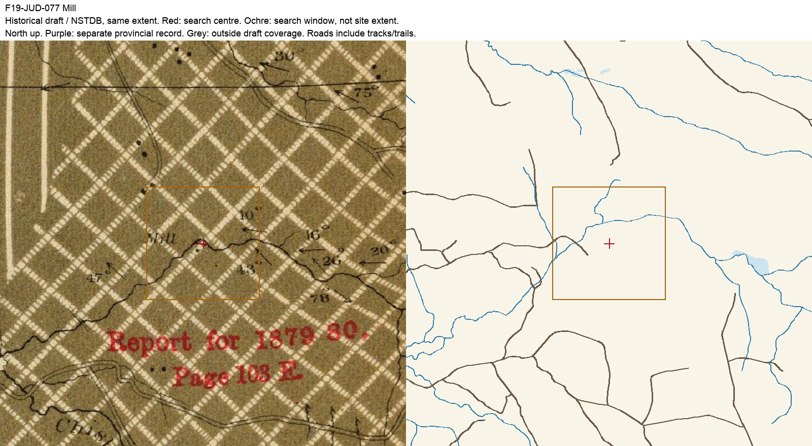
The singular Mill label points toward a brook bend, but the reviewed native pixels do not separate a facility mark from the stream line. A marks this ambiguous bend only.
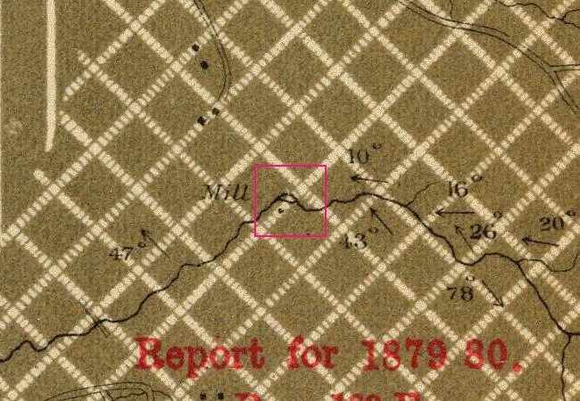
Original scan crop [4475, 3985, 650, 450]; displayed at 1:1, unrotated. Red crosshair: reviewed mark. Pink boxes: unresolved group.The western Mills label sits at the road-and-stream crossing near a pronounced road bend, west of the eastern Mills cluster. The stream branch order and separate eastern crossing corroborate this part of the catchment.
Unresolved: Plural lettering and several nearby building marks do not identify a single facility or exact dam. Road and stream linework differ locally.
Next evidence: Use site-specific evidence to distinguish the buildings and any millrace from the road crossing.
Original scan excerpt · Modern map centred on search area
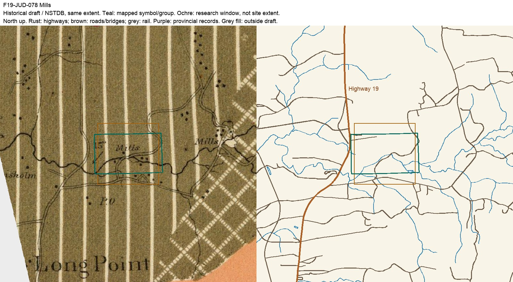
Plural Mills lies among several building-like dots and branching lines. Region B bounds the candidate cluster; no unique printed mill symbol is supported.
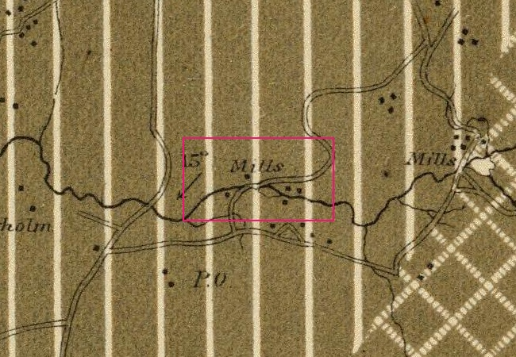
Original scan crop [3835, 4202, 650, 450]; displayed at 1:1, unrotated. Red crosshair: reviewed mark. Pink boxes: unresolved group.The eastern Mills label is beside a north-south road crossing and building cluster, between the western Mills crossing and the northeastern Mill locality. The two stream corridors and road approaches are recognizable in modern NSTDB.
Unresolved: Several buildings, a pale enclosed area and branching linework make the precise facility association unresolved. A modern crossing is not proof of the historical mill footprint.
Next evidence: Identify the historical building group and inspect a dated aerial or mill plan for the crossing and waterworks.
Original scan excerpt · Modern map centred on search area
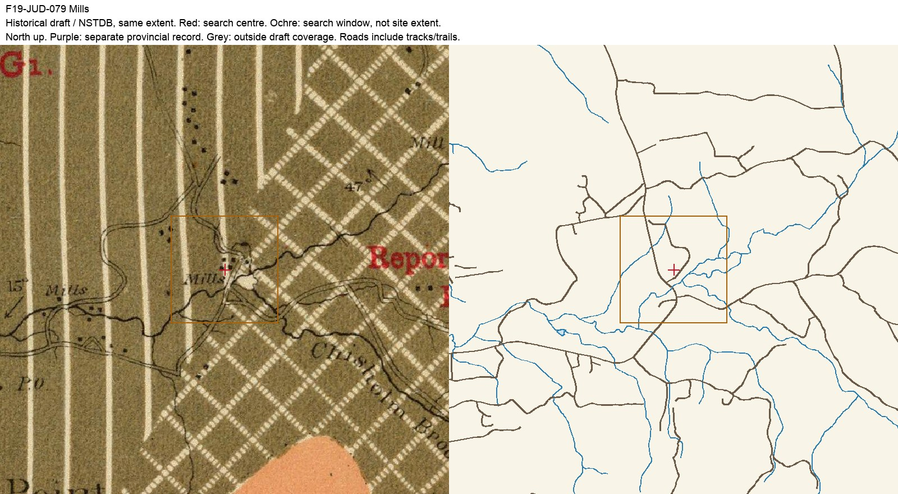
Plural Mills lies beside a dense group of four building-like dots near a junction. Region C bounds that cluster; the source does not identify one dot as the anchor.
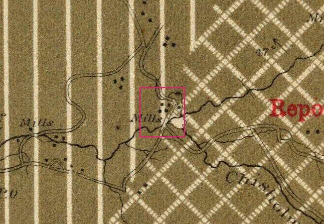
Original scan crop [4085, 4165, 650, 450]; displayed at 1:1, unrotated. Red crosshair: reviewed mark. Pink boxes: unresolved group.The Gold Mine annotation is north of the east-west road, near a tributary crossing, west of the Quartzite Mill annotation and main valley. The modern east-west road and tributary arrangement narrow the district.
Unresolved: Geological linework overlaps the mine annotation. A place-name or nearby mineral occurrence cannot establish an opening at the printed symbol.
Next evidence: Find a dated mine description or plan that links the printed mark to the Melford occurrence and shaft candidates.
Original scan excerpt · Modern map centred on search area
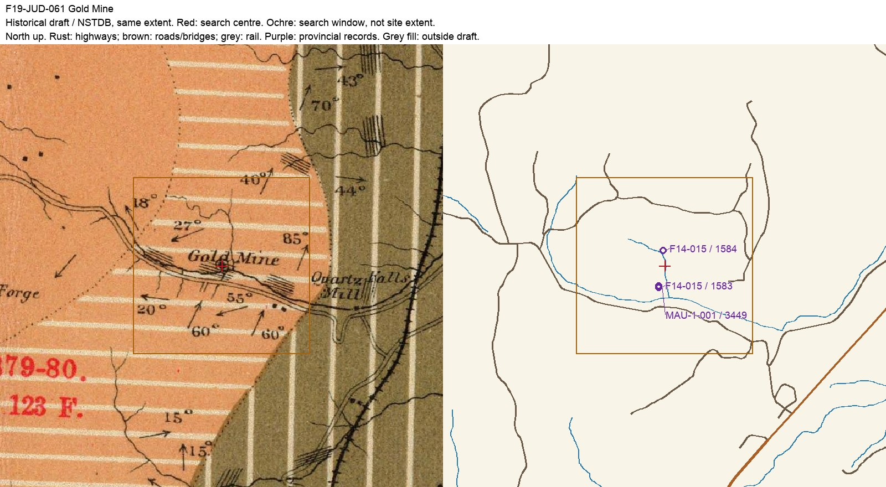
Coordinator native 4x review identifies the compact dark oval beneath Gold at the brook/road, despite geological overprinting. Its centre is approximate printed-symbol placement, not a surveyed mine entrance. The worker alternative regions omitted this mark.
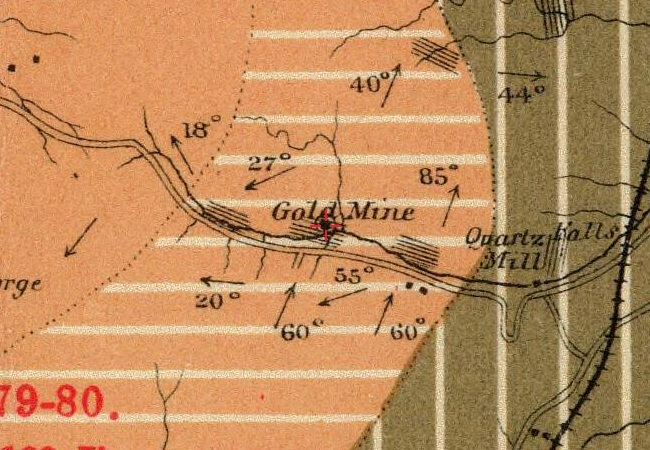
Original scan crop [8054, 2653, 650, 450]; displayed at 1:1, unrotated. Red crosshair: reviewed mark. Pink boxes: unresolved group.Separate provincial record: F14-015 — Strong nearby occurrence candidate, but its representative points do not identify the historical printed mine symbol. Coordinates belong to that record; linkage to Fletcher remains a candidate.
Separate provincial record: F14-015 — Strong nearby occurrence candidate, but its representative points do not identify the historical printed mine symbol. Coordinates belong to that record; linkage to Fletcher remains a candidate.
Separate provincial record: MAU-1-001 — Nearby individual-opening candidate; the source mark and local setting support investigation, but a dated description or plan is still needed to establish historical identity. Coordinates belong to that record; linkage to Fletcher remains a candidate.
A distinct oval mine mark is west of the curving road and Glendale Brook. The brook's western tributaries and its downstream meeting with the eastern stream corroborate the corridor. Local review (September 6, 2026): the user explicitly identified annotation 094 as the gold-mine candidate that looks right.
Unresolved: The lettering centre is well east of the reviewed mine mark. The modern road curve differs locally. The nearby GPS-sourced opening supports further investigation but does not independently establish the historical identity.
Next evidence: Find a dated mining account or plan linking the Glendale Brook shaft to the Fletcher annotation.
Original scan excerpt · Modern map centred on search area
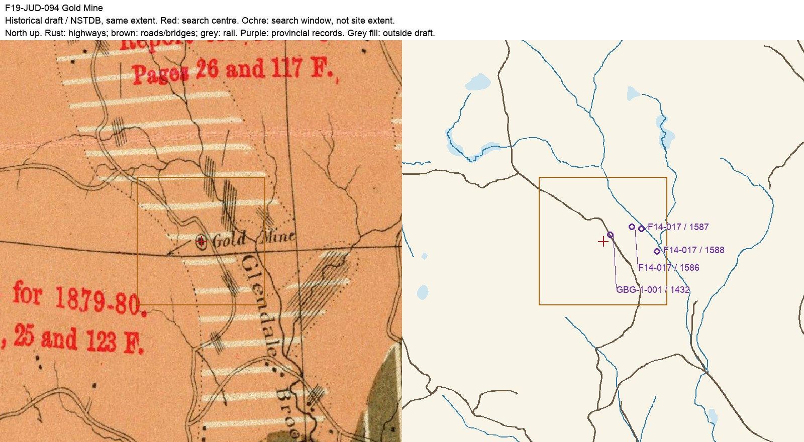
Coordinator native 4x review confirms the oval mine mark west of the road, immediately before Gold Mine. Initial worker crosshair was about 20 native pixels north; corrected before use.
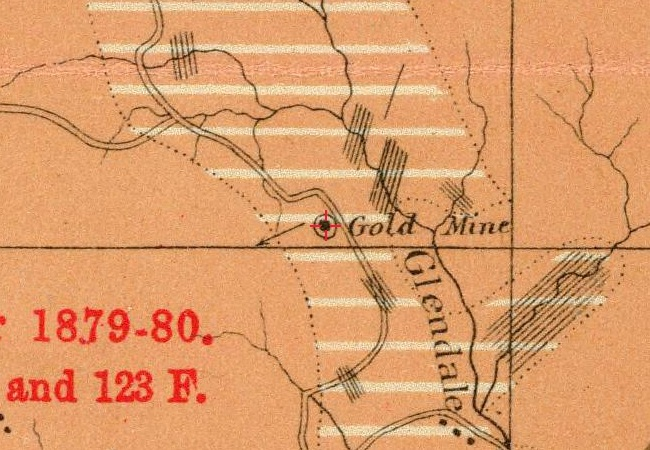
Original scan crop [6630, 3705, 650, 450]; displayed at 1:1, unrotated. Red crosshair: reviewed mark. Pink boxes: unresolved group.Separate provincial record: F14-017 — Strong nearby prospect candidate. The three features are representative points for one occurrence, not three mines. Coordinates belong to that record; linkage to Fletcher remains a candidate.
Separate provincial record: F14-017 — Strong nearby prospect candidate. The three features are representative points for one occurrence, not three mines. Coordinates belong to that record; linkage to Fletcher remains a candidate.
Separate provincial record: F14-017 — Strong nearby prospect candidate. The three features are representative points for one occurrence, not three mines. Coordinates belong to that record; linkage to Fletcher remains a candidate.
Separate provincial record: GBG-1-001 — Nearby individual-opening candidate; the source mark and local setting support investigation, but a dated description or plan is still needed to establish historical identity. Coordinates belong to that record; linkage to Fletcher remains a candidate.
The Plumbago Mine mark lies west of the main valley and railway, south of McPherson's Brook and north of another eastern-flowing tributary. The two tributaries and eastern valley constrain a search district.
Unresolved: No persistent access path or precise mine opening can be identified from the modern road/water reference alone.
Next evidence: Find the original graphite-pit description or prospect plan to establish whether GLM-1-001 is the historical Plumbago Mine.
Original scan excerpt · Modern map centred on search area
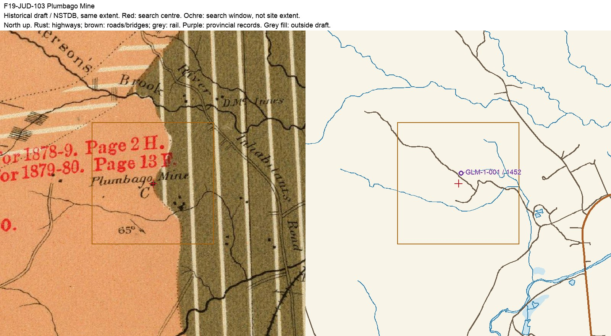
Coordinator native 4x review identifies the isolated filled mark immediately under Mine and above C. The separate southeastern building cluster proposed by the worker is not adopted as the annotation anchor.
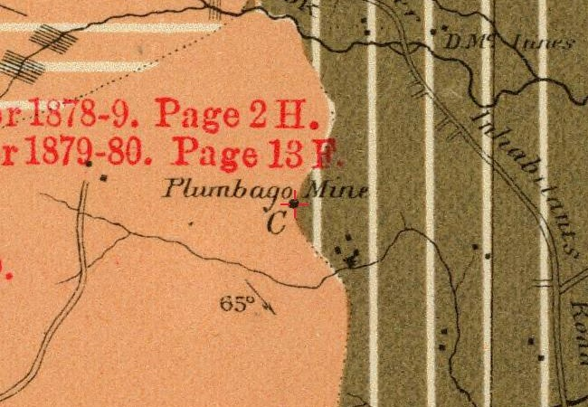
Original scan crop [6592, 4440, 650, 450]; displayed at 1:1, unrotated. Red crosshair: reviewed mark. Pink boxes: unresolved group.Separate provincial record: GLM-1-001 — Nearby individual-opening candidate; the source mark and local setting support investigation, but a dated description or plan is still needed to establish historical identity. Coordinates belong to that record; linkage to Fletcher remains a candidate.
The Red Bridge annotation is associated with the road crossing of the main river, west of the railway crossing. The river's northeast-to-southwest reach and upstream branch junction constrain the crossing corridor.
Unresolved: The label centre is east of the printed crossing. The corrected reference includes the separate highway and bridge layers. Present crossings still need a dated bridge or road record before one can be identified as Red Bridge; the earlier assertion of changed road/rail relationships is not established by the incomplete comparison.
Next evidence: Check dated bridge or road plans to establish the former crossing and the name Red Bridge.
Original scan excerpt · Modern map centred on search area
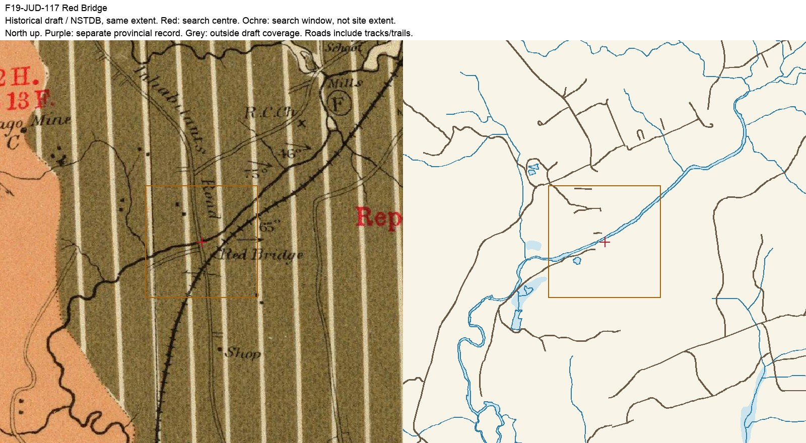
Coordinator native 4x review selects the road-centre/river crossing west of the railway and label. This locates the printed crossing, not a proven modern bridge. Worker crosshair was refined within the width of the printed linework.
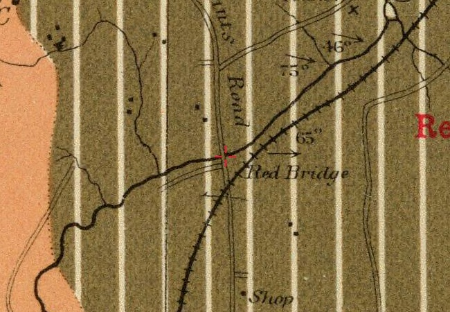
Original scan crop [6894, 4663, 650, 450]; displayed at 1:1, unrotated. Red crosshair: reviewed mark. Pink boxes: unresolved group.{kind=link}
{kind=link}
{kind=link}
{kind=link}
{kind=link}
{kind=link}
{kind=link}
{kind=link}
{kind=link}
{kind=link}
{kind=link}
{kind=link}